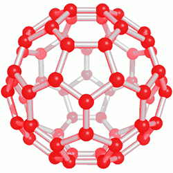
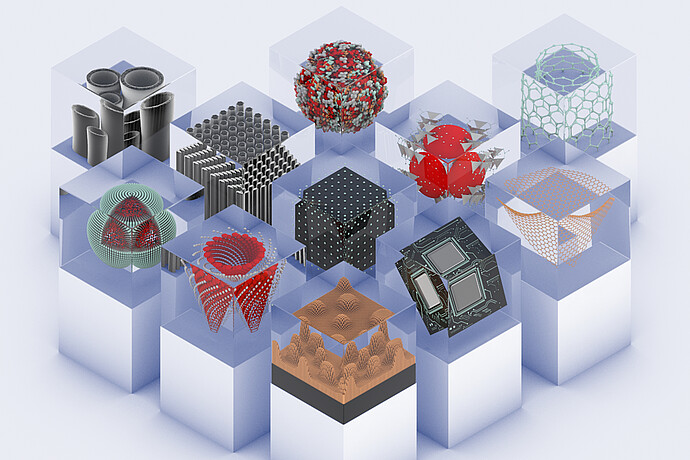

|Materials Science and Engineering |Nanomaterials | Technology |
-MARCH 17, 2023
NANOMATERIALS
The prefix nano means 10-9. When people speak of “nanotechnology,” they usually mean making devices that are on the 1–100 nm scale. It turns out that the properties of semiconductors and metals change in this size range. Nanomaterials—materials that have dimensions on the 1–100 nm scale—are under intense investigation in research laboratories around the world, and chemistry plays a central role in this investigation. Nanoparticles are between 10 and 1000 times larger than an atom.
Some of the physical and chemical characteristics exhibited by matter may experience dramatic changes as particle size approaches atomic dimensions. For example, materials that are opaque in the macroscopic domain may become transparent on the nanoscale; some solids become liquids, chemically stable materials become combustible, and electrical insulators become conductors. Furthermore, properties may depend on size in this nanoscale domain. Some of these effects are quantum mechanical in origin, whereas others are related to surface phenomena—the proportion of atoms located on surface sites of a particle increases dramatically as its size decreases.
Because of these unique and unusual properties, nanomaterials are finding niches in electronic, biomedical, sporting, energy production, and other industrial applications. Some are discussed in this text, including the following:
Catalytic converters for automobiles.
Nanocarbons—fullerenes, carbon nanotubes, and graphene.
Particles of carbon black as reinforcement for automobile tires.
Nanocomposites.
Magnetic nanosize grains that are used for hard disk drives.
Magnetic particles that store data on magnetic tapes.
Whenever a new material is developed, its potential for harmful and toxicological interactions with humans and animals must be considered. Small nanoparticles have exceedingly large surface area–to–volume ratios, which can lead to high chemical reactivities. Although the safety of nanomaterials is relatively unexplored, there are concerns that they may be absorbed into the body through the skin, lungs, and digestive tract at relatively high rates, and that some, if present in sufficient concentrations, will pose health risks—such as damage to DNA or promotion of lung cancer.

Metals also have unusual properties on the 1–100 nm length scale. Fundamentally, this is because the mean free path of an electron in a metal at room temperature is typically about 1–100 nm. So when the particle size of a metal is 100 nm or less, one might expect unusual effects because the “sea of electrons” encounters a “shore” (the surface of the particle).
Although it was not fully understood, people have known for hundreds of years that metals are different when they are very finely divided. Dating back to the Middle Ages, the makers of stained-glass windows knew that gold dispersed in molten glass made the glass a beautiful deep red. Much later, in 1857, Michael Faraday reported that dispersions of small gold particles could be made stable and were deeply colored— some of the original colloidal solutions that he made are still in the Royal Institution of Great Britain’s Faraday Museum in London.
Other physical and chemical properties of metallic nanoparticles are also different from the properties of the bulk materials. Gold particles less than 20 nm in diameter melt at a far lower temperature than bulk gold, for instance, and when the particles are between 2 and 3 nm in diameter, gold is no longer a “noble,” unreactive metal; in this size range it becomes chemically reactive.
At nanoscale dimensions, silver has properties analogous to those of gold in its beau- tiful colors, although it is more reactive than gold. Currently, research laboratories around the world are showing great interest in taking advantage of the unusual optical properties of metal nanoparticles for applications in biomedical imaging and chemical detection.

The elemental carbon is quite versatile. In its bulk sp3 hybridized solid-state form, it is diamond; in its bulk sp2 hybridized solid-state form, it is graphite. Over the past three decades, scientists have discovered that sp2 hybridized carbon can also form discrete molecules, one-dimensional nanoscale tubes, and two-dimensional nanoscale sheets. Each of these forms of carbon shows very interesting properties.
Until the mid-1980s, pure solid carbon was thought to exist in only two forms: the covalent-network solids diamond and graphite. In 1985, however, a group of researchers led by Richard Smalley and Robert Curl of Rice University and Harry Kroto of the University of Sussex, England, vaporized a sample of graphite with an intense pulse of laser light and used a stream of helium gas to carry the vaporized carbon into a mass spectrometer. The mass spectrum showed peaks corresponding to clusters of carbon atoms, with a particularly strong peak corresponding to molecules composed of 60 carbon atoms, C60.
Because C60 clusters were so preferentially formed, the group proposed a radically different form of carbon, namely, nearly spherical C60 molecules. They proposed that the carbon atoms of C60 form a “ball” with 32 faces, 12 of them pentagons and 20 hexagons, exactly like a soccer ball. The shape of this molecule is reminiscent of the geodesic dome invented by the U.S. engineer and philosopher R. Buckminster Fuller, so C60 was whimsically named “buckminsterfullerene,” or “buckyball” for short. Since the discovery of C60, other related molecules made of pure carbon have been discovered. These molecules are now known as fullerenes.

Appreciable amounts of buckyball can be prepared by electrically evaporating graphite in an atmosphere of helium gas. About 14% of the resulting soot consists of C60 and a related molecule, C70, which has a more elongated structure. The carbon-rich gases from which C60 and C70 condense also contain other fullerenes, mostly containing more carbon atoms, such as C76 and C84. The smallest possible fullerene, C20, was first detected in 2000. This small, ball-shaped molecule is much more reactive than the larger fullerenes. Because fullerenes are molecules, they dissolve in various organic solvents, whereas diamond and graphite do not. This solubility permits fullerenes to be separated from the other components of soot and even from one another. It also allows the study of their reactions in solution.
Soon after the discovery of C60, chemists discovered carbon nanotubes. You can think of these as sheets of graphite rolled up and capped at one or both ends by half of a C60 molecule. Carbon nanotubes are made in a manner similar to that used to make C60. They can be made in either multiwall or single-walled forms. Multiwall carbon nanotubes consist of tubes within tubes, nested together, whereas single-walled carbon nanotubes consist of single tubes. Single-walled carbon nanotubes can be 1000 nm long or even longer but are only about 1 nm in diameter. Depending on the diameter of the graphite sheet and how it is rolled up, carbon nanotubes can behave as either semicon- ductors or metals.
The fact that carbon nanotubes can be made either semiconducting or metallic without any doping is unique among solid-state materials, and laboratories worldwide are making and testing carbon-based electronic devices. Carbon nanotubes are also being explored for their mechanical properties. The carbon–carbon bonded framework of the nanotubes means that the imperfections that might appear in a metal nanowire of similar dimensions are nearly absent. Experiments on individual carbon nanotubes suggest that they are stronger than steel, if steel were the dimensions of a carbon nanotube. Carbon nanotubes have been spun into fibers with polymers, adding great strength and toughness to the composite material.
The two-dimensional form of carbon, graphene, is the most recent low- dimensional form of carbon to be experimentally isolated and studied. Although its properties had been the subject of theoretical predictions for over 60 years, it was not until 2004 that researchers at the University of Manchester in England isolated and identified individual sheets of carbon atoms with the honeycomb structure. Amazingly, the technique they used to isolate single layer graphene was to successively peel away thin layers of graphite using adhesive tape. Individual layers of graphene were then transferred to a silicon wafer having a precisely defined overcoat of SiO2. When a single layer of graphene is left on the wafer, an interference-like contrast pattern results that can be seen with an optical microscope. If not for this simple yet effective way to scan for indi- vidual graphene crystals, they would probably still remain undiscovered. Subsequently, it has been shown that graphene can be deposited on clean surfaces of other types of crystals. The scientists who led the effort at the University of Manchester, Andre Geim and Kon- stantin Novoselov, were awarded the 2010 Nobel Prize in Physics for their work.
The properties of graphene are remarkable. It is very strong and has a record thermal conductivity, topping carbon nanotubes in both categories. Graphene is a semimetal, which means its electronic structure is like that of a semiconductor in which the energy gap is exactly zero. The combination of graphene’s two-dimensional character and the fact that it is a semimetal allows the electrons to travel very long distances, up to 0.3 μm, without scattering from another electron, atom, or impurity. Graphene can sustain electrical current densities six orders of magnitude higher than those sustainable in copper. Even though it is only one atom thick, graphene can absorb 2.3% of sunlight that strikes it. Scientists are currently exploring ways to incorporate graphene in various technologies, including electronics, sensors, batteries, and solar cells.
Popular Articles

Programmable Matter
The fiction and real deal behind matter that can change its physical properties.Proposed digital material having computation, sensing, actuation, and display as continuous properties active over its whole extent.
October 30, 2023

Superconductivity
The science behind materials with zero resisitance and interesting magnetic properties that can cause levitation of materials.
March 16, 2024

Quantum Dots
Man-made semiconductor nanoscale crystals that have the ability to convert a spectrum of light into different colors.
March 17, 2024
Material formation
The emergence of materials at the beginning of time, why materials are what they are.
March 17, 2024